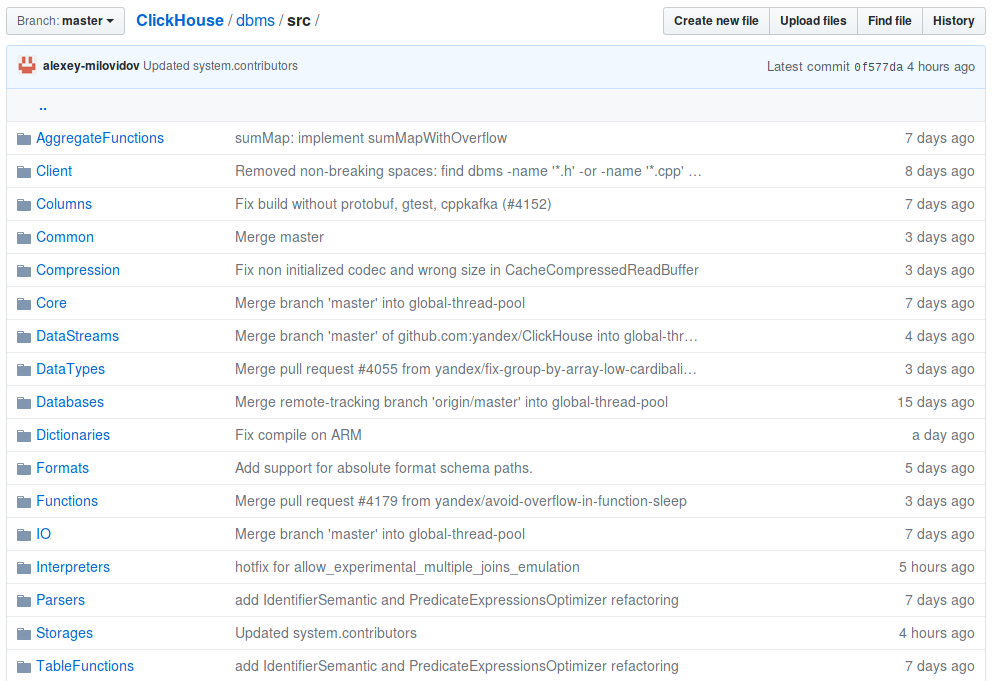

Где найти разработчиков ClickHouse

Здесь!
Здесь!

:) SELECT * FROM system.contributors ┌─name──────────────────────────────────┐ │ Olga Khvostikova │ │ abdrakhmanov │ │ Mikhail Filimonov │ │ Jason │ │ achulkov2 │ │ Veniamin Gvozdikov │ ... │ Artemeey │ │ ivanzhukov │ │ Ilya Khomutov │ └───────────────────────────────────────┘ 303 rows in set.
Нужно знать C++.
... не обязательно
— чтобы попасть в system.contributors, достаточно одного коммита;
— можно исправить опечатку в комментарии.

Можно добавить тест. Можно добавить баг.
commit 531560a6a5c2f177213a0761b1f3595b0730318a
Author: Alexey Milovidov <milovidov@yandex-team.ru>
Date: Sun Dec 30 06:22:05 2018 +0300
Added bug [#CLICKHOUSE-3695]
diff --git a/dbms/tests/queries/bugs/remote_scalar_subquery.sql
new file mode 100644
+++ b/dbms/tests/queries/bugs/remote_scalar_subquery.sql
+SELECT (SELECT 1) FROM remote('127.0.0.{1,2}', system.one);

На диске — столбцы.
Данные хранятся по столбцам.
В оперативке — столбцы.
Данные обрабатываются по столбцам.
В виде кусочков столбцов — например, 65 536 элементов.
Размер кусочка — зависит от многих вещей.
При SELECT — см. настройку max_block_size.
Представлены в виде объектов с интерфейсом IColumn.
Варианты — ColumnVector<T>, ColumnString, ColumnArray...
ColumnVector<T> — почти как std::vector<T>.
Но под интерфейсом IColumn.
И вместо std::vector<T> — PODArray<T> (зачем?).
Раньше был std::vector. PODArray — просто оптимизация.
ColumnString — из двух компонент:
1. Байты, уложенные подряд.
2. Смещения до i+1 строки.
h e l l o \0 w o r l d \0
6 12
ColumnConst
Из одного вложенного столбца,
содержащего одно значение.
Базовые операции:
— cut — вырезать часть столбца, для реализации LIMIT;
— filter — для реализации WHERE;
— compareAt, permute — для реализации ORDER BY;
...
Владение — с помощью COWPtr<IColumn>.
Раньше был std::shared_ptr<IColumn>.
virtual Ptr filter(const Filter & filt, ssize_t result_size_hint) const = 0;
Вместо модификации содержимого, создают
и возвращают новый объект-столбец.
Это нормально, так как операции "крупные".
Но есть также "мелкие", мутирующие операции.
— хранение данных в оперативке;
— общие операции над столбцами.
— Apache Arrow;
— массивы в NumPy;
— массивы APL, J, K.
Изолировать максимально эффективные
внутренние циклы от кода-обвязки.
Код не обязан быть эффективным целиком.
Оптимизируемые места должны быть локализуемы.
«векторный движок»
Бонус:
— SIMD инструкции;
— хитрые оптимизации для однородных данных
(IColumn::filter, реализация функции LIKE);
IDataType
— бинарная сериализация и десериализация в потоки данных;
— один столбец может быть записан в несколько физических потоков, пример: Array(Array(UInt8));
— сериализация и десериализация в текстовом виде для разных форматов данных;
— свойства типа данных;
— полностью immutable: std::shared_ptr<const IDataType>.
DataTypeUInt32 \ / ColumnUInt32
X
DataTypeDateTime / \ ColumnConst(ColumnUInt32)
Кусочек таблицы: набор из { ColumnPtr, DataTypePtr, name }
Обработка данных в конвейере выполнения запроса
выполняется над блоками.
... здесь есть архитектурная ошибка, которую придётся исправить.
Разделить на
Header: набор из { ColumnPtr, DataTypePtr, name }
Block: { size_t num_rows, std::vector<ColumnPtr>, properties... }
IBlockInputStream: Block read();
IBlockOutputStream: void write(Block);
Реализуют:
— форматы данных (CSV, JSON, Native...)
— чтение и запись в таблицы;
— преобразования над данными (Limit, Filter, Expression, ...)
Строго типизированы — блоки имеют одни типы данных
и значения констант.
Интерфейс — IStorage.
Имплементации — StorageMemory, StorageMergeTree...
Экземпляры класса — это таблицы.
virtual BlockInputStreams read(
const Names & /*column_names*/,
const SelectQueryInfo & /*query_info*/,
const Context & /*context*/,
QueryProcessingStage::Enum & /*processed_stage*/,
size_t /*max_block_size*/,
unsigned /*num_streams*/)
Это всего лишь BlockInputStream (для SELECT)
или BlockOutputStream (для INSERT),
который выполняет все нужные преобразования
при вызове метода read или write.
Вопрос — а какой конвейер для INSERT SELECT?
SELECT работает по принципу pull, INSERT по принципу push.
На самом деле это — архитектурная ошибка.
Парсер — recursive descent parser вручную.
Особенности парсера ClickHouse:
— Nested столбцы;
— лямбда-функции;
— алиасы и выражения в любом месте запроса;
InterpreterSelectQuery
ExpressionAnalyzer
Большинство — rule based оптимизации:
— свёртка констант;
— склейка одинаковых выражений;
— удаление ненужных вычислений;
— удаление ненужных столбцов;
...
— протаскивание ARRAY JOIN ближе к концу;
— превращение цепочек OR в IN;
Надо всё переписать :)
Работают сразу над целым блоком.
В коде реализуется не одно применение функции,
а целый цикл над массивами.
Внутренний цикл (обычно) свой
для каждой комбинации типов аргументов.
Внутри цикла (обычно) нет виртуальных вызовов,
проверок типов, лишних бранчей.
Пример: для оператора сложения есть
UInt8 UInt16 UInt32 UInt64 UInt8 UInt16 UInt32 UInt64
Int8 Int16 Int32 Int64 ✕ Int8 Int16 Int32 Int64
Float32 Float64 Float32 Float64
комбинаций.
А ещё один из аргументов может быть константным:
10 * 10 * 3 = 300 реализаций.
IAggregateFunction
create — инициализировать состояние
в заранее подготовленном куске памяти;
add — обновить состояние по значению аргументов;
merge — склеить два состояния в одно;
serialize, deserialize
— записать в поток ввода-вывода (сеть, файл, таблицу)
insertResultInto — получить конечное значение.
Состояние агрегатной функции - first class citizen в ClickHouse!
Основной код СУБД — в директории dbms/src.
Программы (клиент, сервер) — в директории dbms/programs.
Совет: всегда начинайте читать код с .h файлов
— там описания интерфейсов и больше комментариев.

«Rick and Morty», ep. «Rest and Ricklaxation», Justin Roiland and Dan Harmon, 2017
Для тех, кто уже коммитил или пытался коммитить в ClickHouse.
... для полной comparison based сортировки.
В случае, когда есть ORDER BY без LIMIT, это может позволить слегка увеличить производительность.
Смотрим функции sortBlock, а также реализации IColumn::getPermutation.
... для исправления опечаток.
SELECT fomatReadableSize(bytes) FROM table
did you mean formatReadableSize?
SELECT least(123, 456)
— работает.
SELECT least('123', '456')
— не работает.
Делаем с помощью IColumn::compareAt для одинаковых типов
и с помощью castColumn, getLeastSuperType для разных.
randomBinaryString, а также fuzzBits, fuzzBytes.
Как cache, но без кэша — всегда прямой запрос в источник.
SELECT 1 IN (SELECT -1 UNION ALL SELECT 1)
Для тех, кто хочет сделать первый коммит в ClickHouse.
Пустой параметр --password в клиенте должен означать --ask-password.
Оператор NOT BETWEEN.
HTTP заголовок query_id.
Уменьшать max_memory_usage и размеры кэшей при старте.
Битовые операции для FixedString.
Добавить агрегатную функцию topKWeighted.
...